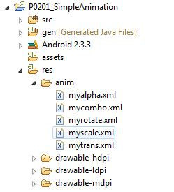
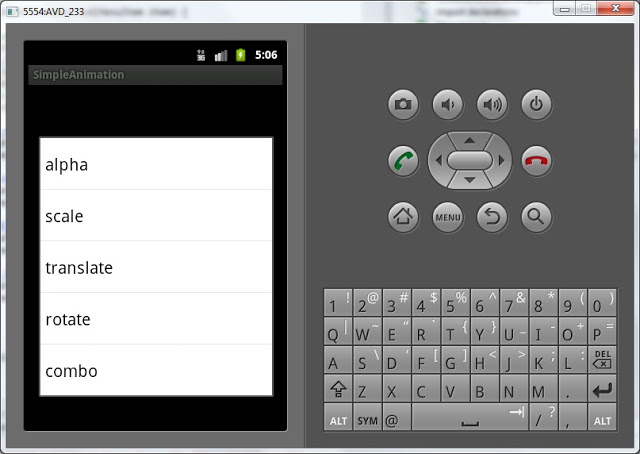

В этом уроке мы:
- рассмотрим анимацию View-компонентов
Перед серьезными темами я решил все таки рассмотреть еще одну интересную и, на мой взгляд, несложную тему. Правда рассмотрю я только вершину и в дебри не полезу. Тема – анимация. Мы научимся проделывать следующие трансформации с обычными View-компонентами:
- менять прозрачность
- менять размер
- перемещать
- поворачивать
Создадим проект:
Project name: P0201_SimpleAnimation
Build Target: Android 4.0
Application name: SimpleAnimation
Package name: ru.startandroid.develop.p0201simpleanimation
Create Activity: MainActivity
Трансформации конфигурируются в XML файлах, затем в коде программы считываются и присваиваются View-элементам. Я не буду дублировать документацию и все расписывать, а сразу перейду к практике.
В нашем проекте есть папка res. Надо в ней создать папку anim. Сделать это можно, например, так: правой кнопкой на res и в меню выбираем New -> Folder. В папке anim надо создать файлы. Делается это аналогично: правой кнопкой на anim и в меню выбираем New -> File. В этих файлах будем конфигурировать анимацию.
Создаем следующие файлы в папке res/anim:
Имя файла: myalpha.xml
Содержимое:
<?xml version="1.0" encoding="utf-8"?>
<alpha
xmlns:android="http://schemas.android.com/apk/res/android"
android:fromAlpha="0.0"
android:toAlpha="1.0"
android:duration="3000">
</alpha>Описание трансформации: меняется прозрачность с 0 до 1 в течение трех секунд.
Имя файла: myscale.xml
Содержимое:
<?xml version="1.0" encoding="utf-8"?>
<scale
xmlns:android="http://schemas.android.com/apk/res/android"
android:fromXScale="0.1"
android:toXScale="1.0"
android:fromYScale="0.1"
android:toYScale="1.0"
android:pivotX="50%"
android:pivotY="50%"
android:duration="3000">
</scale>Описание трансформации: изменение размера с 0.1 от оригинальной ширины и высоты до 1. Точка, относительно которой будет производиться масштабирование, лежит ровно посередине объекта (pivotX, pivotY). Продолжительность – 3 сек.
Имя файла: mytrans.xml
Содержимое:
<?xml version="1.0" encoding="utf-8"?>
<translate
xmlns:android="http://schemas.android.com/apk/res/android"
android:fromXDelta="-150"
android:toXDelta="0"
android:fromYDelta="-200"
android:toYDelta="0"
android:duration="3000">
</translate>Описание трансформации: перемещение с -150 относительно текущей позиции по оси X и -200 по оси Y в текущую позицию (0,0). Продолжительность – 3 сек.
Имя файла: myrotate.xml
Содержимое:
<?xml version="1.0" encoding="utf-8"?>
<rotate
xmlns:android="http://schemas.android.com/apk/res/android"
android:fromDegrees="0"
android:toDegrees="360"
android:duration="3000">
</rotate>Описание трансформации: поворот относительно левого верхнего угла (т.к. не указаны pivotX, pivotY) на 360 градусов в течение трех секунд
Имя файла: mycombo.xml
Содержимое:
<?xml version="1.0" encoding="utf-8"?>
<set
xmlns:android="http://schemas.android.com/apk/res/android">
<rotate
android:fromDegrees="0"
android:toDegrees="360"
android:duration="3000"
android:pivotX="50%"
android:pivotY="50%">
</rotate>
<scale
android:fromXScale="0.1"
android:toXScale="1.0"
android:fromYScale="0.1"
android:toYScale="1.0"
android:pivotX="50%"
android:pivotY="50%"
android:duration="3000">
</scale>
</set>Описание трансформации: одновременно увеличение размера и вращение в течение трех секунд. Обратите внимание, для комбинации трансформ использован тег <set>
Итак, мы создали 5 файлов анимации.

И теперь можем применять их к View-компонентам.
Открываем main.xml и создадим экран:
<?xml version="1.0" encoding="utf-8"?>
<FrameLayout
xmlns:android="http://schemas.android.com/apk/res/android"
android:layout_width="match_parent"
android:id="@+id/frameLayout1"
android:layout_height="match_parent">
<TextView
android:text="TextView"
android:layout_width="wrap_content"
android:layout_height="wrap_content"
android:layout_gravity="center_vertical|center_horizontal"
android:id="@+id/tv"
android:textSize="38sp">
</TextView>
</FrameLayout>По центру экрана находится TextView, к нему и будем применять трансформации. Для этого создадим контекстное меню для TextView, добавим пункты меню, соответствующие нашим наборам и при нажатии будем запускать анимацию.
package ru.startandroid.develop.p0201simpleanimation;
import android.app.Activity;
import android.os.Bundle;
import android.view.ContextMenu;
import android.view.ContextMenu.ContextMenuInfo;
import android.view.MenuItem;
import android.view.View;
import android.view.animation.Animation;
import android.view.animation.AnimationUtils;
import android.widget.TextView;
public class MainActivity extends Activity {
// константы для ID пунктов меню
final int MENU_ALPHA_ID = 1;
final int MENU_SCALE_ID = 2;
final int MENU_TRANSLATE_ID = 3;
final int MENU_ROTATE_ID = 4;
final int MENU_COMBO_ID = 5;
TextView tv;
/** Called when the activity is first created. */
@Override
public void onCreate(Bundle savedInstanceState) {
super.onCreate(savedInstanceState);
setContentView(R.layout.main);
tv = (TextView) findViewById(R.id.tv);
// регистрируем контекстное меню для компонента tv
registerForContextMenu(tv);
}
@Override
public void onCreateContextMenu(ContextMenu menu, View v,
ContextMenuInfo menuInfo) {
// TODO Auto-generated method stub
switch (v.getId()) {
case R.id.tv:
// добавляем пункты
menu.add(0, MENU_ALPHA_ID, 0, "alpha");
menu.add(0, MENU_SCALE_ID, 0, "scale");
menu.add(0, MENU_TRANSLATE_ID, 0, "translate");
menu.add(0, MENU_ROTATE_ID, 0, "rotate");
menu.add(0, MENU_COMBO_ID, 0, "combo");
break;
}
super.onCreateContextMenu(menu, v, menuInfo);
}
@Override
public boolean onContextItemSelected(MenuItem item) {
Animation anim = null;
// определяем какой пункт был нажат
switch (item.getItemId()) {
case MENU_ALPHA_ID:
// создаем объект анимации из файла anim/myalpha
anim = AnimationUtils.loadAnimation(this, R.anim.myalpha);
break;
case MENU_SCALE_ID:
anim = AnimationUtils.loadAnimation(this, R.anim.myscale);
break;
case MENU_TRANSLATE_ID:
anim = AnimationUtils.loadAnimation(this, R.anim.mytrans);
break;
case MENU_ROTATE_ID:
anim = AnimationUtils.loadAnimation(this, R.anim.myrotate);
break;
case MENU_COMBO_ID:
anim = AnimationUtils.loadAnimation(this, R.anim.mycombo);
break;
}
// запускаем анимацию для компонента tv
tv.startAnimation(anim);
return super.onContextItemSelected(item);
}
}Анимация читается из xml-файла методом AnimationUtils.loadAnimation, на выходе получается объект типа Animation. Его используем в методе startAnimation, который запускает анимацию.
Все сохраним и запустим приложение. Вызываем контекстное меню для TextView, и тестируем анимации

Я использовал не все возможности и параметры. Есть еще, например, параметр android:startOffset – он указывает задержку при старте анимации. Т.е. если указать android:startOffset=”1000”, то анимация начнется через секунду. Это удобно использовать если вы делаете набор трансформ (<set>) и вам надо чтобы они запускались не одновременно, а в определенном порядке. Также полезный параметр android:repeatCount – это количество повторов.
Рекомендую поиграть параметрами в XML файлах и посмотреть, что получается.